French Family Association
The Official Website of the Surname French
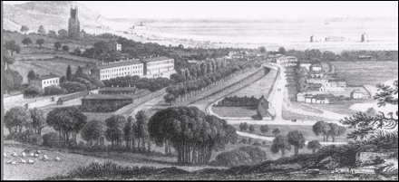
Hythe, Kent, England, a small coastal market town
on the edge of Romney Marsh
Chart #205, James French, ca. 1790
Hythe, Kent, England
Battle, East Sussex, England
Cincinnati, Hamilton Co., Ohio
Truro, Franklin Co., Ohio
Pendleton Co., Kentucky
Osceola, Polk Co., Nebraska
This chart updated by Mara French on 9/27/11. Numbers in brackets [ ] show sources and refer to the bibliography at the end of this chart. An asterisk (*) shows continuation of that line. Send any corrections or additions to this chart to marafrench@mindspring.com. Revisions: 2011.
NOTE: This is only the first draft of this chart. Please make any corrections or additions to this chart – although this is not my family, I will be updating it from time to time. Refer to this chart by chart number. Refer to each family member by their number. Additions are greatly appreciated. You will be notified of the next revision.
Contents
The French Bros. & Bauer Company Creamery
Division of Land in Early Ohio
Close Ties with another French Family in the area – James French, b. 1831
Foreword
I’ve researched this line just about all I can from ancestry.com and from the internet. Additions need to come from family members or from local books or historians who haven’t put their information online.
P.S. Although James French is not of my line, I will continue to do research on him as time permits. My line is FFA Chart #6.
History and Background
This family closely resembles FFA Chart #202 and is the only chart we know of besides FFA Chart #202 with the name Tilden French.
First Generation
1.1 James French, b. ca. 1790 (arbitrary calculation by son’s birth in 1814) in Sussex, England, as per the “Family History” by Charlotte French*, via Mrs. Alycen Herrick Mansell. James d. 10 Aug 1826, in England. His wife was Mary Ann Ferris, b. between 1790 and 1793 in Hull, East Riding, Yorkshire, England. They were married ca. 1813 in England, and had 6 children. She d. 5 Oct 1843 of typhoid fever in Ticehurst Parish, East Sussex, England, as per the Civil Register of Deaths, Fourth quarter 1843, of Ticehurst Parish, Sussex, Vol. 7, p. 335. The next 2 generations of this family named a son, James.
*Is this the Charlotte French who was b. 1873 and was living in 1930 in Lebanon, Warren Co., OH?
Listed in 1840, just 3 years before Mary Ann Ferris French died, was a rough plan of a house and four cottages showing land claimed by the parish of Ticehurst. The house is annotated “George Hodge bought this house which Ticehurst parish formerly sold to T. French”. Could this be their son, Thomas French? (from the National Archives in London)
“A” Sarah French was buried 19 May 1825, 30 years old, living in Battle, b. ca. 1795, and may have been the wife of a French born ca. 1790, or she could have been the sister of James. “A” Charlotte French was buried 21 Sep 1824, 14 months old, living in Battle, b. ca. 1823, perhaps the daughter of Sarah above, or maybe the daughter of James.
Thomas Slaughter is listed in the Parish of Battle, East Sussex Record Office, to serve as a substitute for William French, 4 Aug 1825. William French may be a brother of James.
Second Generation
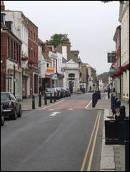 High Street in Hythe (Main Streert)
Children of James and Mary Ann (Ferris) French, 1.1
2.1 Thomas John French, b. 26 Aug 1814 in Hythe, Kent, England, d. 1 Sep 1899 in Clifton, Cincinnati, Hamilton Co., OH. He was the first French from this line to immigrate to America. He immigrated his wife, his brother James, and his son James; his other 4 siblings remained in England. James, his son, was not yet a year old. Thomas was the only one of this generation to carry on the surname French.
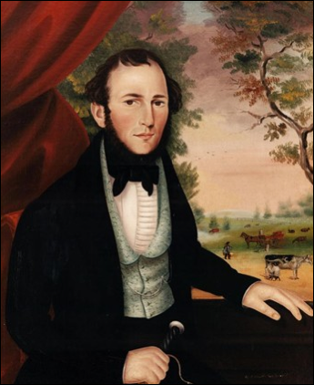
Portrait by John Bradley, artist, New York, of Thomas John French Sr, born 26 Aug 1814, Hythe Barracks, County Kent, England, died 1 Sep 1899, Clifton, Cincinnati, Hamilton County, Ohio
He was baptized on 4 Sep 1814 at Saint Leonard’s Anglican Church in Hythe, Kent, England, according to Anglican Bishops transcripts, LDS microfilm #1786586, Item 4. Thomas and his parents and sister Mary lived in Hythe until about 1817 when they moved to Battle, East Sussex, England. In Battle, about 18 years later, Thomas m. Ann Heaves on 24 Jun 1835 in Battle, East Sussex, England, at age 20. They immigrated 2 years later in Mar 1837 on the ship “Westminster” to New York Harbor, NY, only with their youngest child, James, who was only 11 months old. Apparently, Thomas John French’s youngest brother, James, also emigrated to NY and then moved to OH.
Saint Leonard’s Anglican Church in Hythe, Kent, England
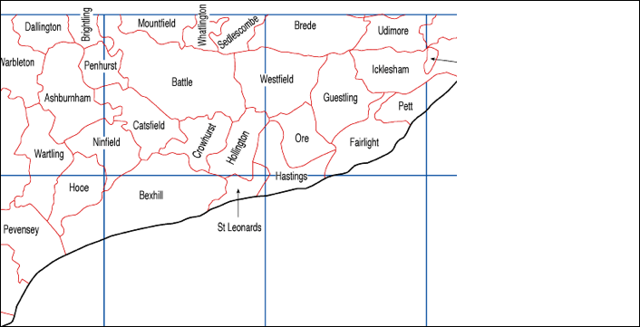
Battle is adjacent to Penhurst where another French family lived who emigrated to America, FFA Chart #E42. Penhurst is only 4 miles from Battle where the Battle of Hastings took place on 14 Oct 1066. See Maps of the Parishes of Sussex.
Marriage
Thomas James French m. Ann Neeves on 24 Jun 1835 in Battle, East Sussex, England, at age 20. She was the daughter of Richard Neeves. She was b. 1 Feb 1812 in Hooe Parish, Sussex, England and d. 11 Oct 1890 in Mill Creek, Hamilton Co., OH.
Immigration
From the New York Passenger Lists, 1820-1957, 22 Mar 1837, Ship Westminster
DISTRICT OF NEW-YORK -- PORT OF NEW-YORK.
I, George Moore, do solemnly, sincerely and truly swear that the following List or Manifest of Passengers, subscribed with my name, and now delivered by me to the Collector of the Customs for the District of New-York, contains, to the best of my knowledge and belief, a just and true account of all the Passengers received on board the Ship Westminster whereof I am the Master, from London & Portsmouth to the 22 March 1837. Sworn before me [illegible signature of the Collector of Customs].
List or Manifest of all the Passengers taken on board the Ship Westminster whereof George Moore is master, from London & Portsmouth, burthen Six hundred thirty-one 42/95 tons.
More than 100 passengers were listed. Among them, (with comments from the FFA)
76. Thomas French, age 22, labourer (therefore, born 1814)
77. Ann (Neeves) French, age 25 (therefore, born 1817 – wife of Thomas, b. 1 Feb 1812)
78. James French, age 11 months (therefore, born Apr 1836 – son of Thomas and Ann)
79. David Neves, age 26 (brother of Ann)
80. Martha Neves, age 21 (sister-in-law of Ann)
81. Ann Neves, age 8 months (daughter of David and Martha)
82. John Davis [sic -- this may be a mistranscription of Neves], age 23 [43?]
83. Stephen Neves, age 12 years.
WESTMINSTER (1835)
The U.S. ship WESTMINSTER was built at New York by Christian Bergh & Co, and launched in 1835. 631 tons; 135 ft 3 in x 32 ft 2 in x 20 ft 5 in (length x beam x depth of hold). She served in the Black X Line of sailing packets between New York and London fromn 1835 to 1850, during which period the average length of her westbound passages was 37 days, her shortest passage being 20 days, her longest 56. By 1850, she was considered to small and outdated for the competitive trans-Atlantic packet service, and at the end of the year she was transferred to the New Orleans Louisiana and New York Line of New York-New Orleans packets, where she ran from 1851 to 1857; during this period the average length of her passages from New York to New Orleans was 19.1 days, her shortest passage being 12 days, her longest 33 days. I know nothing of her subsequent history or ultimate fate.
Source: Robert Greenhalgh Albion, Square-riggers on Schedule; The New York Sailing Packets to England, France, and the Cotton Ports (Princeton: Princeton University Press, 1938), pp. 282-283, and 294-295.
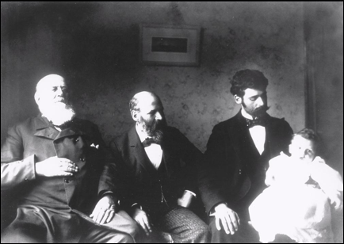
Four generations of the French clan: Thomas John French Sr, Tilden Russel French, Frank Edward French, and Allen Sidney French
Thomas John French Sr. appears in the 1840 census of Ward 12, NY at age 26. This census proves that his first child, James, had died because he would have been 4 years old, but is not listed. His next child was Emma, born in 1840, and she may have been the female under 5. This is the only French family living in Ward 12 NY in 1840:
white male 10-14 = James French, brother of Thomas,
born 1824, was 13 years old at the time
white male 20-29 = Thomas, in 1840 he was 26
white female under 5 = Emma French just born or Ann Neves (see ship list above)
2 white females 20-29 = Ann, wife of Thomas, and someone else, maybe from the
Neves family
1840 Census of Wards in New York, NY, for the Surname French
Ward 1: Philip (probably FFA Chart #131)
Ward 3: Abel
Ward 4: Arthur, Barker
Ward 5: Jane A.
Ward 6: James, Richard
Ward 7: Anderson, Jacob, George
Ward 8: John, Ulyses D., William
Ward 9: Ely, Nincens R.
Ward 10: Ezekiel, M. A., Rachel
Ward 11: Samuel V.
Ward 12: Thomas
Ward 14: Ebenezer, Nathan
Ward 16: Ensiyre, James, Thomas
In the 1840 census of Cincinnati are: John L. French, Eliza R. French, Ira French, Maynard French, Samuel French, and William French.
Thomas John French appears in the 1850 census of Pendleton Co., KY, and in the 1860 census of Millcreek Twp., Hamilton Co., OH. He was a resident of Beech Grove Farm, east side of Carthage Pike, Avondale, Millcreek Twp., Cincinnati, Hamilton Co., OH between 1862 and 1874 where he appears in the 1870 census. They had 10 children.
Thomas pioneered in the wholesale collection and retail distribution of milk. Cincinnati was America's second city; New York was first to operate a dairy under modern methods of marketing. See the bottom of this website, The French Bros. & Bauer Company Creamery.
Religion
Thomas James French joined the first New Jerusalem Society of Cincinnati in 1849 at age 35. His wife and children also belonged to this church. It was organized in 1811 and was under the care of Rev. Adam Hurdus, with 22 followers, of whom five were members of his family. It was located on Centre Street (now called Longworth Street), between Fifth and Sixth streets. Johnnie Appleseed was a member of this church and it was his way of spreading his faith by planting apple seeds. The names of subsequent members of the Society are signed in a book, which carries the history of the Society to 1849, a total of 118 additional names.
Today there are two congregations in Hamilton Co.---the first one is in Glendale, the second in Montgomery.
Church of the New Jerusalem, 845 Congress Ave. Cincinnati, Ohio 45246, phone: (513) 772-1478
Kemper Road Swedenborgian Church, 9035 East Kemper Rd. Cincinnati, Ohio. 45242, phone: (513) 489-9572
Most of this information is from “Outline History of the New Jerusalem Church of Cincinnati: 1811-1903” from Google books which describes the records and constitution of the church in detail, i.e., “in June 1839, it was decided to admit as members adult females who had been baptized, but without the right to vote.” It is 68 pages, and the name French appears on 5 pages as follows:
From these pages, Thomas French and his wife Ann left the church in 1887, probably due to declining health, but the record states that he had died. Another record shows he d. 1 Sep 1899, but he is also not listed in the 1880 census.
Prof. Thomas French, Jr., was the son of Thomas French, and he was b. in 1848, and states that he was superintendent of the Sunday school for 17 years, from 1885 the Fall of 1901 when he left Cincinnati.
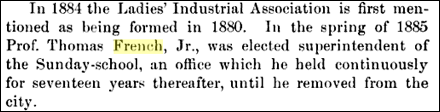
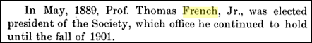
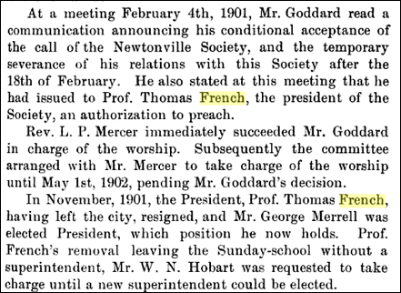
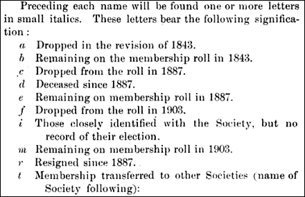
Shows year they joined the first New Jerusalem Society of Cincinnati, and are listed in order of date joined. Thomas was the 27th person to join.
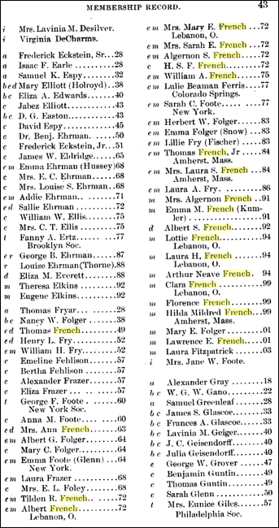

Death
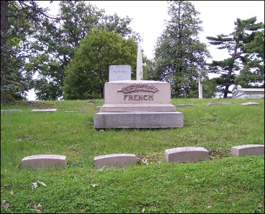
Thomas John French d. 1 Sep 1899 at age 85 in Clifton, Cincinnati, Hamilton Co., OH. His funeral was held 4 Sep 1899 at 2517 Gilbert Ave., Cincinnati, Hamilton Co., OH at 10 a.m. at the home of his nephew/son-in-law Thomas J. Chapman on Carthage Pike. He was buried that day at the Spring Grove Cemetery, Cincinnati, Hamilton Co., OH.
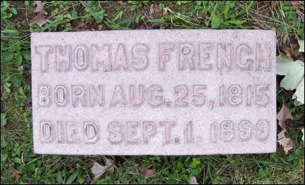
Ann Neeves French was b. 1 Feb 1812 in England and d. 11 Oct 1890 in Cincinnati and is buried at the Spring Grove Cemetery alongside her husband.
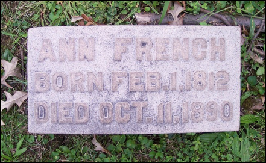
2.2 Mary Anne French, b. 1816 in Hythe, Kent, England. Baptized 19 Feb 1816 at Saint Leonard’s Anglican Church in Hythe, Kent, England. She most likely did not immigrate to America.
2.3 Sarah French, 1818 in Battle, East Sussex, England. Baptized 16 Sep 1818 in Battle, East Sussex, England, as listed in the parish register of Anglican Church in Battle, East Sussex, England. She most likely did not immigrate to America.
Photos of Battle, East Sussex, England, where the Battle of Hastings took place on 14 Oct 1066, taken by Mara French on her trip there in June 2010.
2.4 Elizabeth French, b. 1820 in Battle, East Sussex, England. Baptized 9 Aug 1820 in Battle, East Sussex, England, as listed in the parish register of Anglican Church in Battle, East Sussex, England. She most likely did not immigrate to America.
2.5 Philadelphia French, b. 1822 in Battle, East Sussex, England. Baptized 3 Nov 1822 in Battle, East Sussex, England, as listed in the parish register of Anglican Church in Battle, East Sussex, England. She d. 14 Apr 1843 at age 21 in Battle, East Sussex, England. She did not immigrate to America. There are many records of a Philadelphia French living at this time in Sussex.
2.6 James French, b. 1824 in Battle, East Sussex, England. Baptized on 24 Oct 1824 in Battle, East Sussex, England, as listed in the parish register of Anglican Church in Battle, East Sussex, England. His burial records at Spring Grove Cemetery in Cincinnati, Hamilton Co., OH, indicate that he was born in 1825 in England, d. 1 Apr 1893 in Reading (or Sycamore), Hamilton Co., OH, and that he was the brother of the cemetery lot’s owner, Thomas French, his father. The cemetery records state that he was single.
He is listed on the census of Cincinnati, Hamilton Co., OH of 1870 when he was a farm laborer. He d. 1 Apr 1893 in Reading, Sycamore Twp., Hamilton Co., OH, and was buried 3 Apr 1893 at the Spring Grove Cemetery, Cincinnati, Hamilton Co., OH. Many other members of the French family are buried at this cemetery.
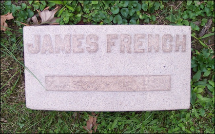
Third Generation
Children of Thomas John and Ann (Neaves) French, 2.1
3.1 James French, b. Mar or Apr 1836 in Hythe, Kent, England, d. 1838 in NY, NY, at age 2. He had emigrated with his parents from London, England on 22 Mar 1837 on the ship “Westminster” to New York.
3.2 Emma Marie French, b. 1 Mar 1840 in NY, d. 16 Jun 1928 in Cincinnati, Hamilton Co., OH. She appears in the 1850 census of Pendleton Co., KY, in the 1860 census of Copley Twp., Summit Co., OH, then m. Thomas John Chapman on 15 Jun 1864. They resided in Delhi Twp., Hamilton Co., OH in 1866 and 1870. She is listed in the 1880 census of Cincinnati, Hamilton Co., OH, as living on Ludlow Avenue. Then in the 1900 census of Cincinnati, she lived on Carthage Pike, as well as in the 1920 census at 3350 Carthage Pike. She d. 16 Jun 1928 at age 88 in Cincinnati and is buried at the Spring Grove Cemetery. She had attended college at Oberlin college in Lorain Co., OH. They had 4 children: Grace Ann, Tilden Russel, Harry Neeves, and Irene Augusta Chapman.
3.3* Tilden Russel French, b. 23 Dec 1841 in Columbus, Franklin Co., OH, d. 23 Feb 1923 in Cincinnati, Hamilton Co., OH. Tilden is in the 1850 census of Pendleton Co., KY, in the 1860 census of Millcreek Twp., Hamilton Co., OH, m. Mary Ellen Sayers on 11 Jan 1866 in Avondale, Cincinnati, Hamilton Co., OH. He is in the 1870 census of Delhi Twp., Hamilton Co., OH, and joined the First New Jerusalem Society of Cincinnati in 1872. He is in the 1880 census of Oakley, Cincinnati, Hamilton Co., OH, and in the 1900 and 1910 and 1920 census records, he lived at 2448 Observatory Ave., Cincinnati. He and Mary Ellen had 3 children.
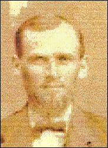
His father, Thomas, pioneered in the wholesale collection and retail distribution of milk. Cincinnati was America's second city; New York was first to operate a dairy under modern methods of marketing. See the bottom of this website, The French Bros. & Bauer Company Creamery.
Tilden Russel French and Mary Ellen Sayers
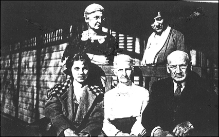
Tilden French and the women of the French clan,
at Mrs. Melrose Swallow French's wedding, October 1920? Aunt Tillie French Kumler, Melrose French, Nellie
Marthens French, Grandma Mary Sayers French, and Tilden R. French.
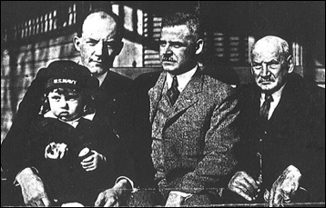
Allen Sidney French, Frank French, Tilden R. French, Dick French
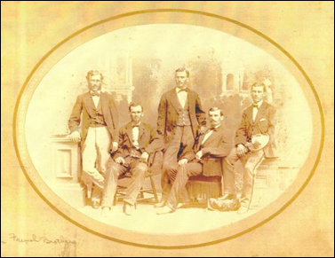
The French Brothers: Thomas J. French Jr., Tilden Russel French, Algernon S. F. French, Albert French and William Arthur French
Death
Tilden Russel French d. 23 Feb 1923 in Cincinnati, and is buried at the Spring Grove Cemetery.
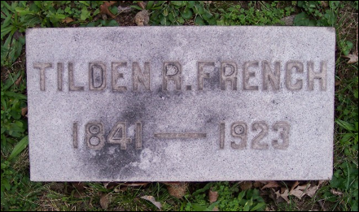
3.4 Mathilda French, b. 2 Apr 1844 in Clifton, Cincinnati, Hamilton Co., OH, d. 5 Aug 1862 in Avondale, Cincinnati, Hamilton Co., OH, at the Beech Grove Farm at age 18. She belonged to the New Jerusalem Church in Cincinnati, OH.
3.5* Albert French, b. 8 Apr 1846 in Newport, Campbell Co., KY, d. 23 Feb 1916 in Lebanon, Warren Co., OH.
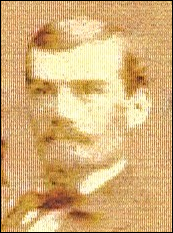
The 1850 census shows him in Pendleton Co., KY. The 1860 census shows him in Millcreek Twp., Hamilton Co., OH. The 1870 census shows him in Avondale, Cincinnati, Hamilton Co., OH. On 27 Jul 1870, he m. Sarah Ella Brown. He was a dairyman and joined the First New Jerusalem Society of Cincinnati in 1872 at age 26. The 1880 census shows him in Oakley, Cincinnati, Hamilton Co., OH, at which time he was a bookkeeper, probably for his family’s dairy company. In the 1900 census, he was living at 2430 Observatory Ave., Cincinnati, Hamilton Co., OH, which was in Hyde Park Village, Columbia Twp., and he was a dealer of dairy products. In the 1910 census he was 64 and living in Lebanon, Turtlecreek Twp., Warren Co., OH. He had 5 children and died on 23 Feb 1916 in Lebanon, Warren co., OH, of labor intestinal paralysis. He is buried at the Spring Grove Cemetery in Cincinnati, Hamilton Co., OH.
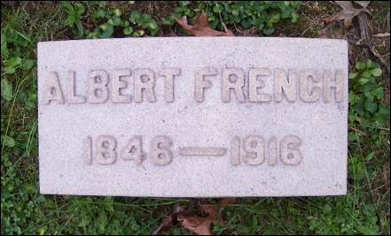
His father, Thomas, pioneered in the wholesale collection and retail distribution of milk. Cincinnati was America's second city; New York was first to operate a dairy under modern methods of marketing. See the bottom of this website, The French Bros. & Bauer Company Creamery.
3.6* Thomas J. French, b. 15 Jan 1848 in Cincinnati, Hamilton Co., OH, d. 11 May 1936 in Sebastopol, Sonoma Co., CA.
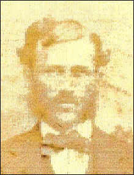
He is listed in the 1850 census of Pendleton Co., KY. In the 1860 census, he was in Millcreek Twp., Hamilton Co., OH. In the 1870 census, he was attending Harvard University and living in Cambridge, Middlesex Co., MA. By 1877 he returned to Ohio and married Laura Sullivan Hildreth on 8 Jan 1877 in Hamilton Co., OH, at the New Jerusalem Church. He appears in the 1880 census living on Miami St. in Urbana, Champaign Co., OH. In 1884 at age 36 he joined the First New Jerusalem Society of Cincinnati. In the 1900 census he appears at 713 E. Ridgeway Ave., Cincinnati, Hamilton Co., OH. In 1910 he lived at 40 Brantford Place, Ward 19, Buffalo, Erie Co., NY. In the 1920 census, he had moved to 1140 Sutter St. in San Francisco, CA. Later on in that year, he lived at El Nido Ranch in Sebastopol, Sonoma Co., CA. In the 1930 census, he is still at El Nido Ranch in Sebastopol, West Blucher Precinct, Analy Twp., Sonoma Co., CA. He d. 11 May 1936 at age 88 of arteriosclerosis in Sebastopol and was cremated at Cypress Lawn Crematory in Colma, San Mateo Co., CA. He and Laura had 3 children.
3.7 Algernon Sidney Foster French, b. 31 Mar 1850 in Cincinnati, Hamilton Co., OH, d. 14 Oct 1930 at 2444 Observatory Ave., Cincinnati, Hamilton Co., OH, and is buried at the Spring Grove Cemetery in Cincinnati, Hamilton Co., OH. He is listed in the 1850 census of Pendleton Co., KY. In the 1860 census, he was in Millcreek Twp., Hamilton Co., OH. He appears in the 1870 census of Cincinnati, and in 1872 at age 22 he joined the First New Jerusalem Society of Cincinnati. He m. Anna Colesworthy Bunker in 1878. He shows up in the 1880 census of Columbia Twp., Hamilton Co., OH, and in the 1900 and 1910 and 1920 and 1930 census at 2444 Observatory Ave., Cincinnati, Hamilton Co., OH. They had 2 daughters: Florence Cameron and Edith.
His father, Thomas, pioneered in the wholesale collection and retail distribution of milk. Cincinnati was America's second city; New York was first to operate a dairy under modern methods of marketing. See the bottom of this website, The French Bros. & Bauer Company Creamery
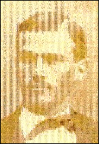
3.8 William Arthur French, b. 8 Feb 1852 in Newport, Campbell Co., KY, d. 19 Feb 1913 in Cincinnati, Hamilton Co., OH and is buried at the Spring Grove Cemetery. In the 1860 census, he was in Millcreek Twp., Hamilton Co., OH. He appears in the 1870 census of Cincinnati, and in 1875 at age 23 he joined the First New Jerusalem Society of Cincinnati. In 1875 he was working at French and Tucker Pork Packers with Manning P. Tucker. He m. Louisa M. Schoellhammer on 27 Feb 1877. He is in the 1880 census on Ludlow Ave., Cincinnati, Hamilton Co., OH working as a butcher. In the 1890 census he was living on Jefferson Ave. at W. Nixon St. in Cincinnati, Hamilton Co., OH working as a caterer. In the 1910 census he was living at 1637 Pullan Ave., Cincinnati, Hamilton Co., OH working in the family dairy business. He d. 19 Feb 1913 in Cincinnati and is buried at the Spring Grove Cemetery.
His father, Thomas, pioneered in the wholesale collection and retail distribution of milk. Cincinnati was America's second city; New York was first to operate a dairy under modern methods of marketing. See the bottom of this website, The French Bros. & Bauer Company Creamery.
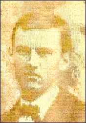
3.9 Ebenezer French, b. died before 1860 in childhood.
3.10 Sarah French, b. died before 1860 in childhood.
Fourth Generation
Children of Tilden R. and Mary Ellen (Sayers) French, 3.3
4.1 Albert Sidney French, b. 24 Nov 1866 in Delhi, d. 29 Jan 1895 in Delhi Twp., Hamilton Co., OH. He appears in the 1870 census of Delhi, in the 1880 census of Oakley, Cincinnati, Hamilton Co., OH, he joined the First New Jerusalem Society of Cincinnati in 1892 at age 26, and he died 3 years lager on 29 Jan 1895, age 28, in Hyde Park, Cincinnati, Hamilton Co., OH of erysipelas and exhaustion. He was buried at the Spring Gove Cemetery in Cincinnati.
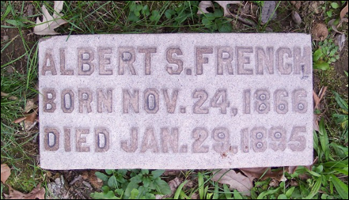
4.2 Emma Matilda French, b. 7 Aug 1868 in Cincinnati, Hamilton Co., OH, appears in the 1870 census of Delhi, in the 1880 census of Oakley, joined the First New Jerusalem Society of Cincinnati in 1891 at age 23, m. Albert Amos Kumler on 24 Jun 1896 in Hyde Park, Cincinnati, Hamilton Co., OH. She appears in the 1900 and 1910 and 1920 and 1930 census records of Cincinnati. She d. 9 May 1932 in Delhi and was buried at the Laurel Cemetery in Madisonville, Hamilton Co., OH. She had 2 children: Alberta and Mary Fumler.
4.3* Frank Edward French, b. 10 Jul 1871 in Anderson Ferry Rd., Cincinnati, Hamilton Co., OH, and was baptized on 17 May 1874 according to the Swedenborgian rite. Emanuel Swedenborg (1668-1772) was a Swedish scientist, philosopher, and mystic. The spiritual beliefs that he expounded after a series of mystical experiences blended Christianity with pantheism and theosophy.
He m1. Nellie Emma Conkling on 9 May 1894 and had 2 sons: Allen and Tilden French. After Nellie d. 1 Jan 1919 in Madisonville, Hamilton Co., OH, Frank m2. Inez Melrose Swallow on 20 Oct 1920 and had 2 more children: Frank Jr. and Inez French. Nellie was b. 26 Jul 1872 in OH and d. 1 Jan 1919 in Madisonville, Hamilton Co., OH. Inez was b. 2 Sep 1891 near Union City, Randolph Co., IN and d. 15 Oct 1984 in Silver Spring, Montgomery Co., Maryland. She is buried at Gate of Heaven Cemetery in Montgomery Co., MD.
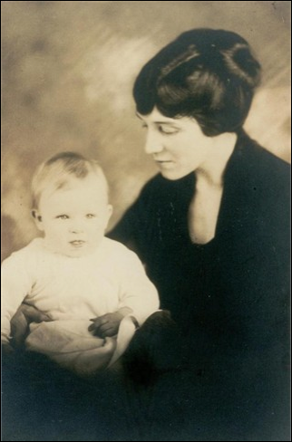
Inez Melrose Swallow French and Frank French Jr. at 6 months old, 1922
He appears in the 1880 census of Oakley, Cincinnati, Hamilton Co., OH, in the 1890 census of Brookline Ave., Clifton, Cincinnati.
In 1891 and 1892 Frank ran the French Brothers Dairy in Cincinnati, Hamilton Co., OH. Thomas French, his great-grandfather, pioneered in the wholesale collection and retail distribution of milk. Cincinnati was America's second city; New York was first to operate a dairy under modern methods of marketing. See the bottom of this website, The French Bros. & Bauer Company Creamery. Frank was the President of this company and resigned on 1 Apr 1925 at age 53, after being the President since 1912.
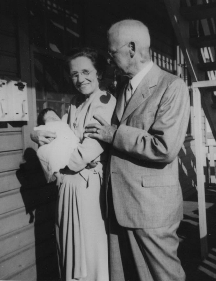
Grandparents Frank E. French, Sr., and Inez Melrose French holding baby Christine French.
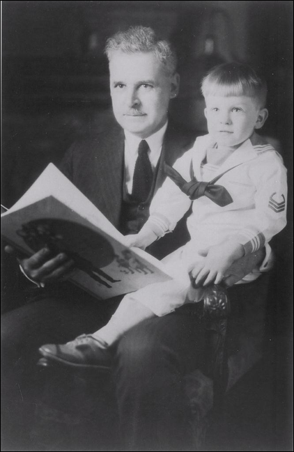
Frank E. French Sr. and Jr., early to mid 1920s.
Frank appeared in the 1900 census of Madisonville, Hamilton Co., OH, and on the 1910 census of Cincinnati, Hamilton Co., OH. He was elected a director of the Cincinnati Chamber of Commerce in 1917 at age 45. He appears in the 1920 and 1930 census records of Cincinnati.
Death
He d. 6 Feb 1972 in WDC at age 100. A mass was held at Blessed Sacrament Church, 3630 Quesada Street, WDC.
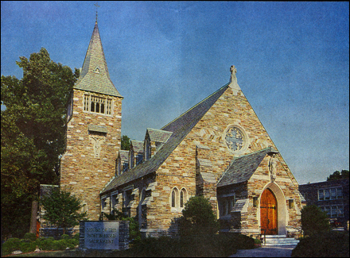 Blessed Sacrament Church
He is buried at the Silver Spring Cemetery, Montgomery Co., Maryland.
Children of Albert and Sarah Ella (Brown) French, 3.5
This family ended with no male child to carry on the surname French.
4.4* Arthur Neeves French, b. 21 Jul 1871 in Oakley, Cincinnati, Hamilton Co., OH, d. 27 May 1953 in Cincinnati, Hamilton Co., OH. He is listed in the 1880 census of Oakley. He joined the First New Jerusalem Society of Cincinnati in 1894 at age 23. He m1. Nellie Dec 1895 in OH, d. 7 Apr 1919 in Warren Co., OH. Arthur is listed in the 1900 census on Columbus Ave., Lebanon, Warren Co., OH, in Turtle Creek twp., but the block with 51 Columbus Ave. no longer exists. He was a proprietor of his grandfather’s creamery in 1900 at age 29. He was a Major in the First Infantry Regiment of the Ohio National Guard between 1902 and 1905. Thereafter on 28 Aug 1906, he m2. Emma W. Westerman in Oden, Emmet Co., MI. She was b. 4 Jul 1882 and d. 24 Mar 1939; they had only one child, a daughter named Martha Helen French (1910-2001). In the 1910 census, he was living at 232 Broadway St., Lebanon, warren Co., OH, the Turtle Creek Twp. And he was an overseer of his grandfather’s dairy farm. In the 1920 census, he lived at 116 Orchard Ave., Lebanon, Warren Co., OH and was the manager of his grandfather’s creamery. He d. 27 May 1953 at age 81 in Cincinnati, and was buried at the Lebanon Cemetery, W. Silver St., in Lebanon, Warren Co., OH.
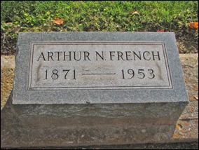 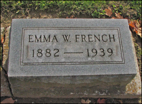
His grandfather, Thomas, pioneered in the wholesale collection and retail distribution of milk. Cincinnati was America's second city; New York was first to operate a dairy under modern methods of marketing. See the bottom of this website, The French Bros. & Bauer Company Creamery.
4.5 Charlotte Washburn French, b. 17 Dec 1872 in OH, d. 30 Jun 1971 on 119 Cincinnati Ave., Lebanon, Warren Co., OH. She is listed in the 1880 census of Oakley. She joined the First New Jerusalem Society of Cincinnati in 1894 at age 22. She is listed in the 1900 census of 2430 Observatory Ave., Cincinnati, Hamilton Co., OH, in Hyde Park Village, Columbia Twp. Then in the 1910 census, she is in Lebanon, Warren Co., OH. In the 1920 census she is living at 119 Cincinnati Ave., Lebanon, Warren co., OH, as well as in the 1930 census. She d. 30 Jun 1971 in Lebanon and is buried at the Lebanon Cemetery. She did not marry or have children.
4.6 Laura Hildreth French, b. 30 Dec 1874, d. 1961.
http://trees.ancestry.com/tree/24160503/person/1481901082
4.7 Clara French, b. 1877, d. 1968.
4.8 Stella French, b. 1879, d. 1897.
Children of Thomas J. and Laura Sullivan (Hildreth) French, 3.6
No male French heirs in this family.
4.9 Hilda Mildred French, b. 2 Jan 1879 in Urbana, Champaign Co., OH, d. 16 Aug 1963 in Sebastopol, Sonoma Co., CA. She appears in the 1880 census on Miami St., Urbana, Champaign Co., OH. In 1899 she joined the First New Jerusalem Society of Cincinnati. In 1906 she m. Louis Rowell Herrick. In the 1910 census she lived in Madison, Dane Co., WI. In the 1930 census she lived at 213 Fifth Ave. N. Mount Vernon, Linn Co., Iowa in Franklin Twp. She d. 16 Aug 1963 at 84 years old in Sebastopol, Sonoma Co., CA, but was buried on 10 Oct 1963 at the Spring Grove Cemetery in Cincinnati, Hamilton Co., OH. She and Louis had 3 children: Edwin Rowell Herrick, Gertrude French Herrick, and Thomas Hildreth Herrick.
4.10 Laurence Elwell French, b. 16 Jan 1883 in Urbana, Champaign Co., OH, d. 30 Mar 1972 in Sebastopol, Sonoma Co., CA. In 1901 he joined the First New Jerusalem Society of Cincinnati. In the 1900 census, he lived at 713 E. Ridgeway Ave., Cincinnati, Hamilton Co., OH. In the 1910 census he lived at 40 Brantford Place, Buffalo, Erie Co., NY. In the 1920 census he appears in Sebastopol, Sonoma Co., CA. In the 1930 census, he is living at El Nido Ranch, West Clucher Precinct, Sebastopol, Sonoma Co., CA.
He m. in 1922 at age 39 to Margaret Augusta Konig. He d. 30 Mar 1972, age 89 in Sebastopol, and was cremated and interred at the Santa Rosa Memorial Park, Sonoma Co., CA. Margaret was b. 10 Nov 1889 in California and d. 11 Oct 1972 in Sebastopol, just 6 months after her husband died. No known children.
He attended Harvard University from 1904-7 and graduated in 1907 with a S.B. in Mechanical Engineering. His occupation was in Automobile Engineering. In the Harvard College Class of 1907 Secretary’s Fourth Report, he wrote: (digitized copy)
I returned to Cambridge the year following graduation and spent several months in completion of the work undertaken in connection with my thesis. This was the design of an instrument called a Manograph, used for taking indicator readings on gasoline engines.
After completing this, I went into the motorcycle business at Brockton, Mass., in partnership with Charles H. Metz (who later became president of the Metz Co. of Waltham). This business venture was dropped after several months on account of the general business depression which occurred in 1908.
For some time following I was employed on the editorial staff of the Horseless Age (a technical paper devoted to automobile interests).
I then went into business for myself, selling automobiles, motorcycles, and parts at Buffalo, N. Y., until December, 1910. I closed up this business and went to Europe in 1911, where I toured from Naples, Italy, to Ireland, visiting most of the principal places of interest in intermediate countries. At the end of the summer of 1911 I returned to the United States and went to California, where I went into business again, selling motorcycles and parts until 1913. At that time I became interested in light cars known as cycle cars and was engaged as chief engineer of the Los Angeles Cycle Car Co. I had charge of the engineering office of this company at Buffalo. N. Y. for about seven months.
I then obtained a position as experimental engineer with the Hupp Motor Car Co. of Detroit. Mich., where I was employed until March, 1917. During this time I had charge of the Hupp experimental laboratory, testing out all new parts of the car. I have just come to California as President and Manager of the California Vaporizer Co., organized to manufacture and sell vaporizers enabling automobiles to operate on kerosene or distillate.
I have written a number of technical articles (or the Horseless Age), which appeared in July and October, 1915.
Another article he wrote:
After leaving College I spent the first four and a half years In the motorcycle business. I was with the American Motor Co. of Brockton, Mass., the first half year. For two years I was manager of a motorcycle sales branch at Buffalo, N, Y., and for two years manager of a motorcycle sales branch at Los Angeles, Cal. In 19 13, when the cycle-car craze swept the country, I designed one of these machines on the strength of which a company was formed for their manufacture. I was sent East as the engineer for the company to perfect the design. I opened an engineering office in the old Thomas factory, and there designed and built two new models. Upon the strength of these samples the company received a large number of orders, but upon my return to the Coast I found that the financial affairs of the company had been so mismanaged that the proposition had eventually to be abandoned.
I returned to the East and took an engineering position with the Hupp Motor Car Co. of Detroit, Mich., where I remained for two years. During the latter part of that period I had charge of the research laboratory of that company. My work in this connection gave me some experience with kerosene carburetors and I obtained a contract for the sales rights for such a device on the Pacific Coast. I returned to the coast in the Spring of 19 17 to take up this contract but the party of the first part made a better deal elsewhere and broke the agreement. I brought no legal action but started in with the development of a kerosene carburetor of my own. I obtained patents along this line and so far succeeded that I made a successful cross continental run on kerosene fuel from Cincinnati, Ohio, to San Francisco, in the Summer of 1918. My latest patents in this line are now about due for final allowance and will no doubt eventually bring some returns.
For the last three years I have been engaged in the manufacture of oil burners and have perfected a machine for attachment to the ordinary hot-air furnace to permit the use of oil fuel in place of coal. The present prospects seem favorable to a successful development along this line. I have quite a number of burners in service and sales seem to be increasing.
During the Summer of 1911 I made a tour of Europe starting at Naples, Italy, and passing through Switzerland, France, Germany, Holland, England, and Ireland. My trans-continental automobile trip in 19 18 was full of ad- venture and gave a lasting impression of the vastness of desert stretches in this country. On my first trip across the country I stopped off at the Grand Canyon of Arizona. This last Summer I had a delightful trip to Yosemite Valley. The valley has become amazingly popular, having seen 90,000 tourists this summer. One unique feature is an artificial fire fall every night at nine. Burning embers are dropped from a cliff 3,000 feet above Camp Curry and fall 1,200 feet across the face of the cliff.
War Service: When this country entered the war my entire capital was invested in a business venture which it was impossible to drop without total loss. As soon as this could be closed up, however, I applied for a commission in the motor transport service. All preliminary requirements were successfully met and I had received papers for immediate induction into the service when the armistice was signed.
4.11 Vida Rachel French, b. 1885, d. 1986.
http://trees.ancestry.com/tree/24160503/person/1481900976
Fifth Generation
Children of Frank E. and Nellie Emma (Conkling) French, 4.3
5.1 Allen Sidney French, b. 4 Apr 1895 in Madisonville, Hamilton Co., OH, d. 8 Jan 1980 in Cincinnati, Hamilton Co., OH. He lived in Hamilton County most of his life, and is in the 1900 census of Madisonville, 1910 census of Cincinnati, 1920 census of Norwood, then moved in the 1930 census to Licking Pike, Cold Spring Campbell Co., KY.
He enlisted in the military service during 1917 in 4th Company, Coast Artillery Corps, and received an honorable discharge for being 50% disabled.
Allen m1. Nellie May Marthens on 23 Jun 1917 in Hamilton Co., OH. She was b. 24 Oct 1892 in Covington, Kenton Co., KY and d. 10 Jan 1935 in Cincinnati, Hamilton Co., OH and is buried at the Laurel Cemetery in Madisonville, Hamilton Co., OH. They had 1 child.
Allen remarried after Nellie had died. He m2. Kathryn Eppensteiner on 27 Jun 1936 in Norwood, Hamilton Co., OH. He d. 8 Jan 1980 in Cincinnati, Hamilton Co., OH at age 84 and is buried at Gate of Heaven Cemetery. They had 3 children.
5.2 Tilden Russel French, b. 20 Feb 1897 in Madisonville, Hamilton Co., OH, d. 8 May 1970 in Cincinnati, Hamilton Co., OH. He lived all of his life in Hamilton Co., OH, and was the superintendant of his father’s dairy company. He m. Grace Eunice Boehner, b. 27 Dec 1900 in Springfield Park, OH, and d. 20 Nov 1986 in North Palm Beach, Palm Beach Co., FL. She was buried at the Laurel Cemetery in Madisonville. They had 1 child.
Children of Frank E. and Inez Melrose (Swallow) French, 4.3
Because this marriage took place almost 30 years after the first marriage, the generation dates may seem incorrect, but they are not.
5.3 Frank Edward French Jr., b. 1920 in Cincinnati, Hamilton Co., OH. I believe he married and had daughter Christine who m. Hemple and had 3 children. He probably also had son Michael, b. ca. 1946.
Frank Edward French, Jr.
5.4 Inez Melrose French, b. 12 Feb 1924 in Cincinnati, Hamilton Co., OH, d. 14 Dec 2009 in Rockville, Montgomery Co., Maryland. She m. Philip Aloysius Ryan on 19 Dec 1947 in Cincinnati, Hamilton Co., OH. Philip Aloysius Ryan was b. 21 Apr 1917 in Philadelphia, PA, d. 29 Aug 1977 in WDC.
Margaret French, Inez Melrose French, Inez Melrose French Ryan, and Philip Ryan
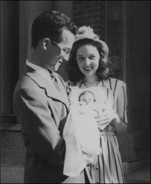
Philip and Inez French Ryan and their niece Christine
Children of Arthur Neeves and Emma W. (Westerman) French, 4.4
5.5 Martha French, b. 1910, d. 2001, m. Walter Henry Miller who was b. 1905, d. 1979, both are buried at the Lebanon Cemetery, Lebanon, Warren Co., OH.
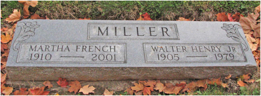
The French Bros. & Bauer Company Creamery
A venture of the time was the Thomas French Company (1840), which became in 1842 the French-Bauer Company, Cincinnati’s leading distributor of milk and dairy products. Thomas French pioneered in the wholesale collection and retail distribution of milk. Cincinnati was America's second city; New York was first to operate a dairy under modern methods of marketing. Previously, milk had been sold in cans and buckets, and consumers had to buy it either in stores or directly from dairymen.
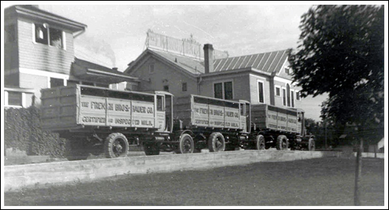
The French Bros & Bauer Co., Certified and Inspected Milk, Lebanon, Ohio, 1920s – 1930s. From the Warren County Historical Society, http://www.wchsmuseum.org/index.php/from-the-archives/.
In 1845 French Bros established a business in Cincinnati, OH, for the purpose of supplying fresh milk to consumers, which developed successfully, leading to the building of a creamery at Lebanon, Ohio, in 1898.
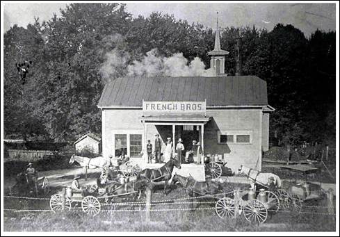
French Bros. Creamery Station, Oregonia, Ohio, late 1800s or early 1900s. From the Warren County Historical Society, http://www.wchsmuseum.org/index.php/from-the-archives/.
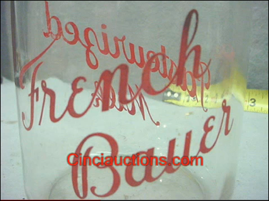 French-Bauer milk bottle
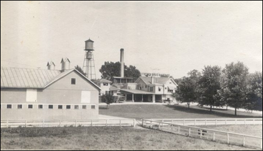
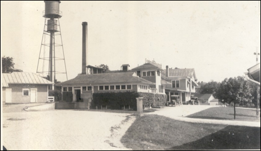
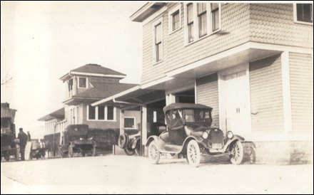
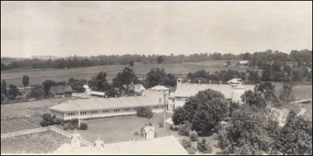
1924 Lebanon, Ohio, French-Bauer Dairy Farm
Division of Land in Early Ohio
The original Wayne County was established 15 August 1796. This county disappears from Ohio in 1803 when Ohio became a state and ultimately became Wayne County, Michigan.
The present day Wayne County was formed 13 February 1808 and named after Gen. "Mad Anthony" Wayne, who was an outstanding Indian fighter in Ohio. The county seat is Wooster.
On 11 April 1812, the county was divided into four townships: Sugarcreek, Wooster, Mohican, and Prairie. On the 5th of September 1814, East Union and Lake Townships were formed. Four days after Perry's victory on Lake Erie, 14 September 1814, Mohican Township was changed to Perry.
On 15 June 1815, Springfield Township was formed but later disappears as other townships are formed. Chippewa Township was formed 4 September 1815. Baughman, Salt Creek, Chester, and Paint Townships were formed 5 March 1816.
Wayne Township was formed 12 October 1816 with Greene Township following on 5 February 1817; Congress and Milton on 5 October 1818; Jackson Township came into being 1 February 1819 and Canaan 5 May 1819.
With the formation of Plain Township in early 1817, the north half of Springfield Township was wiped out. On 7 June 1820 the township of Franklin was formed. Pike Township was formed in 1817 and was composed of the exact territory, which now constitutes Clinton and eradicated the remaining half of Springfield Township. The last of the present day sixteen townships, Clinton, was formed on 7 June 1825.
DNA Testing
Administered by Julia French Wood. For any questions regarding DNA, please email Julia at juliaFWood@aol.com.
A good source for research would be for a male with the
surname French of this line to take the DNA test. It is a simple test that
doesn’t involve blood. A kit is delivered to your house with special brushes
for you to take cheek swabs and the tip is injected into the tiny test tubes to
be returned to the lab. After the tests that you ordered are completed, in
about 4 weeks, you will be notified and can log in to your personal page at the
company to view your results and your DNA matches. They may match up with one
of the tests shown here: http://www.familytreedna.com/public/french/default.aspx?section=yresults.
The FamilyTree DNA website gives a special lower price to those with the
surname French. Read about those who approve of it: http://www.familytreedna.com/testimonials.aspx.
To get the discounted price for our French DNA Project group, go to http://small-stuff.com/FRENCH/DNA/ and click at
the left on "Join the French DNA Project" then place your
order. Julia French Wood suggests the 37 marker test (Y-DNA37), but if you
want to start with 25, you can upgrade to a higher test at a later date if
needed.
Bibliography
[1] Jeff French, http://wc.rootsweb.ancestry.com/cgi-bin/igm.cgi?op=GET&db=allmyresearch&id=I18316, Email: frenchfamily@bresnan.net, 307-672-3301.
[2] Social
Security Death Index for Sheridan, WY
Bert French, b. 18 Jul 1881, d. May 1973
Lloyd French, b. 30 Jul 1905, d. May 1983
Norma K. French, b. 30 Mar 1910, d. 21 Apr 1987
Herbert French, b. 16 Jul 1888, d. Jul 1974
Gladys R. French, b. 2 Feb 1902, d. 6 Jan 1996
Steven L. French, b. 4 Dec 1954, d. 21 Oct 2004
[3] Cary Winright, email: beccarde@gmail.com, not her direct line, but she is working on it.
[4] Research by Mark W. French, website: http://trees.ancestry.com/tree/24160503/person/1481901826, email: mwfrench@nycap.rr.com (good in 2011).
[5] Sussex Family History Group Home Page, http://www.sfhg.org.uk/index.html. There are 1730 Frenches listed in the SFHG Tombstones and Burials: http://www.sfhg.org.uk/mipageF.html